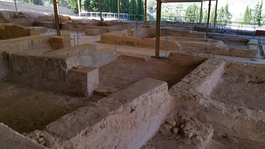
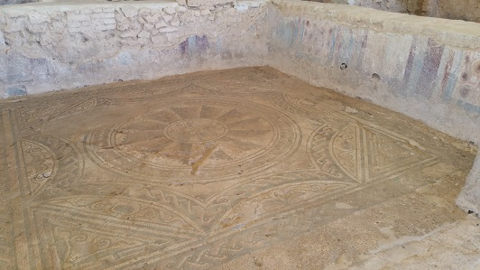
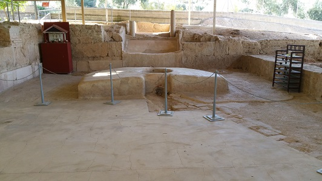

|
La Villa Romana
de "El Ruedo" se halla en el municipio cordobés de Almedinilla a
114km de Córdoba por la N-432.
|
Fue descubierta en 1989 y constituye uno de los mejores ejemplos de
la cultura grecorromana en Andalucía por su extraordinaria
decoración escultórica y arquitectónica. En Almedinilla han
aparecido restos prehistóricos, fenicios, griegos y iberos en el
cerro de la Cruz. El
inicio de la construcción de esta villae, se cree pertenecía a una familia importante,
y se data en la primera
mitad del siglo I. Junto a la villa se ha localizado una necrópolis que
correspondería a la última fase de ocupación entre los siglos IV y
V. Esta Villa se supone que se mantuvo habitada de forma continuada durante
siglos, dado que en el yacimiento se han encontrado monedas con la efigie de los
distintos emperadores romanos.
|
|
|
|

La villa de "El Ruedo" está dividida en dos zonas: una residencial, organizada en torno a un
patio la Pars Urbana; y otra de trabajo, Pars Rustica,
que albergaba las viviendas de los sirvientes, las prensas y todos
aquellos objetos relacionados con la actividad agrícola.
Es un claro exponente
de la cultura grecorromana, conserva la totalidad del trazado de
las dependencias que la integraban, así como importantes esculturas, mosaicos y
pinturas murales que revelan el culto a los distintos dioses: Dionisos,
Hermafrodita, Venus, Hermes...
Una de las
esculturas encontradas realizada en bronce, representa a Hypnos/Somnus, genio del sueño en la mitología grecorromana; otra, en
mármol, al dios oriental Attis. Es una de las mejores esculturas del Dios Somnus. De especial interés son también los restos hallados de un grupo
escultórico que representa la leyenda de Perseo y Andrómeda. En las excavaciones apareció
instrumental médico.
|
|
|
|
|
 |
 |
Algunos
investigadores consideran que se trata de un santuario dedicado a Attis,
divinidad vinculada a los ritos funerarios y la inmortalidad, cuyo culto se hizo
oficial en Roma durante el reinado de Claudio; pero la mayoritaria de los investigadores
afirma que El Ruedo es
un asentamiento rústico-urbano, con espacios para el culto y de excepcional
valor por su monumentalidad y conservación.
En marzo de 2022,Hallan una necrópolis romana con tumbas de esclavos y
sirvientes. Los enterramientos se han localizado de manera casual en las
obras de un parking para autocaravanas. La pobreza de las estructuras
apunta a personas de muy bajo estrato social vinculadas a la villa de El
Ruedo.
También destaca el yacimiento ibérico de El Cerro de la Cruz que estuvo
habitado entre el siglo V-II a.e.c
Ver Villas romanas
|